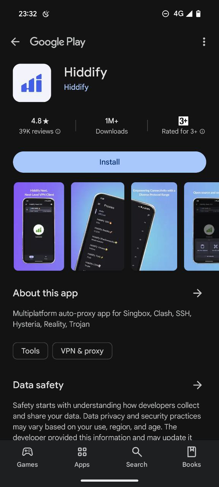
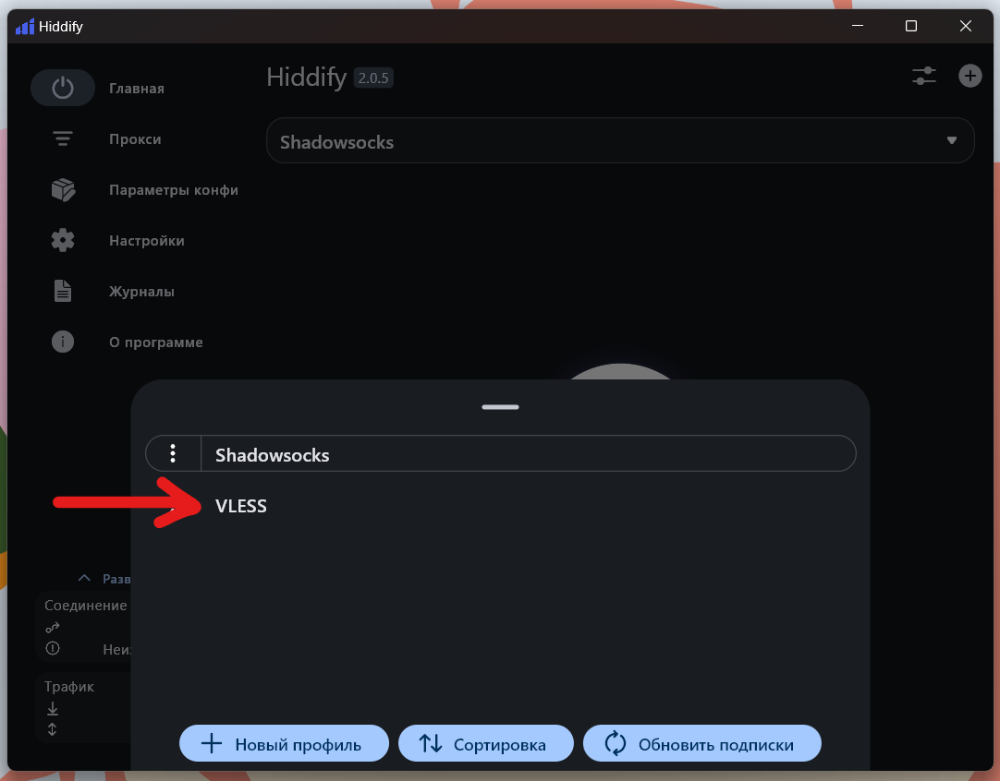

Какое устройство настроить?
Шаг 1
Открой ссылку https://play.google.com/store/apps/details?id=app.hiddify.com и установи приложение на телефон

Шаг 2
Открой приложение. Выбери:
- Язык:
Русский - Регион:
Россия - Сбор аналитики:
Отключен
Шаг 3
Нажми Начать. Откроется главное окно приложения.
Шаг 4
Открой телеграм и скопируй целиком текст который начинается с vless://...:
Шаг 5
Нажми кнопку с символом плюса в правом верхнем углу:
Шаг 6
Нажми Добавить из буфера обмена

Повтори шаги 4-6 для текста который начинается с ss://....
Шаг 7
После того как обе ссылки вставлены, нажми на выпадающий список наверху приложения:

Шаг 8
Во всплывающем окне будет 2 опции: VLESS и Shadowsocks. Выбери VLESS.
VLESS- основной способ подключения. Предоставляет наилучшую скоростьShadowsocks- запасной способ. Используй его еслиVLESSпо какой-то причине перестанет работать
Шаг 9
Вернись на главный экран и кликни на большую круглую кнопку в центре экрана (1).
Дождись пока статус сменится на Подключено (2). Когда приложение подключится, внизу (3) можно посмотреть используемый способ подключения (vless или shadowsocks) и статистику:
Приложение можно оставить подключенным 24/7. Что бы отключить - кликни на большую круглую кнопку ещё раз.
Шаг 10
Можешь свернуть приложение. Оно продолжит работать в фоне.

Шаг 1
Открой Пуск меню, набери cmd в строке поиска и запусти командную строку:
Шаг 2
Должна открыться командная строка. Скопируй следующий текст: winget install --id Hiddify.Next --source winget и кликни правой кнопкой внутри командной строки что бы вставить скопированный текст:
Шаг 3
Нажми клавишу Enter - начнётся установка приложения. Дождись пока установка завершится:
Шаг 4
Когда установка закончится, на рабочем столе должна появиться вот такая иконка:
Шаг 5
Запусти приложение. Удостоверься что язык приложения стоит Русский, регион - Россия, и Сбор аналитики отключен:
Регион Россия означает что сайты расположенные в России будут открываться напрямую, в то время как все иностранные сайты будут пытаться обойти блокировку.
Нажми Начать. Откроется основное окно приложения.
Шаг 6
Открой телеграм и скопируй целиком текст который начинается с vless://...:
Шаг 7
Переключись обратно в приложение и в правом верхнем углу кликни на иконку с символом плюса:
Шаг 8
Во всплывшем окне кликни Добавить из буфера обмена:
Повтори шаги 6-8 для текста который начинается с ss://....
Шаг 9
После того как обе ссылки вставлены, нажми на выпадающий список наверху приложения:
Шаг 10
Во всплывающем окне будет 2 опции: VLESS и Shadowsocks. Выбери VLESS.
VLESS- основной способ подключения. Предоставляет наилучшую скоростьShadowsocks- запасной способ. Используй его еслиVLESSпо какой-то причине перестанет работать

Шаг 11
Открой настройки приложения и убедись что включены настройки Запуск при загрузке и Тихий запуск:
Приложение будет запускаться автоматически каждый раз когда ты включаешь компьютер и висеть в трее (см Шаг 14)
Шаг 12
Вернись на главный экран и кликни на большую круглую кнопку в центре экрана (1).
Дождись пока статус сменится на Подключено (2). Когда приложение подключится, в левом нижнем угле (3) можно посмотреть используемый способ подключения (vless или shadowsocks) и статистику:
Приложение можно оставить подключенным 24/7. Что бы отключить - кликни на большую круглую кнопку ещё раз.
Шаг 13
Раз в 1-2 месяца проверяй появилась ли новая версия приложения в меню О программе:
Шаг 14
Можешь закрыть приложение. Оно должно остаться висеть в трее:
Что бы открыть его, просто кликни на иконку.